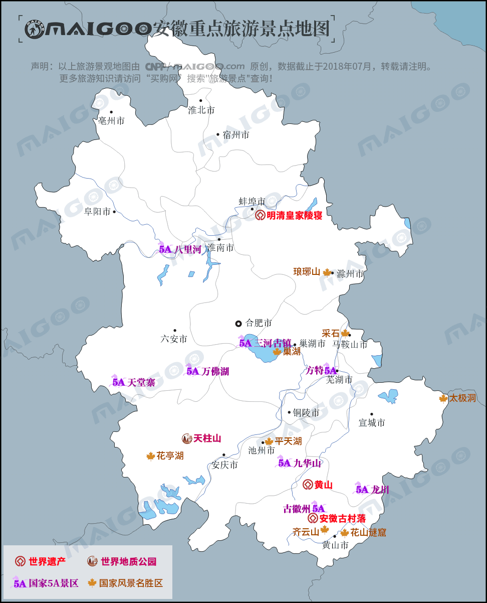

| | | | | |
| - | - | - | - | - |
|<b>别名</b>|皖、八皖、新安、吴头楚尾、江淮之滨||<b>著名景点</b>|逍遥津 包公园 明中都 三河古镇 皇藏峪 天堂寨 古徽州文化旅游区|
|<b>行政区类别</b>|省||<b>机 场</b>|合肥新桥国际机场、黄山屯溪国际机场、安庆机场、池州机场等|
|<b>所属地区</b>|中国华东||<b>火车站</b>|合肥南站、宿州东站、蚌埠南站、黄山北站|
|<b>下辖地区</b>|16个地级市、7个县级市、44个市辖区、54个县、1个国家级新区||<b>车牌代码</b>|皖A-皖S|
|<b>电话区号</b>|0550至0566||<b>GDP</b>|27518.7亿元（2017年）|
|<b>邮政区码</b>|230000至247000||<b>人均GDP</b>|44206元人民币（2017年）|
|<b>地理位置</b>|中国东部，长江下游，淮河中游||<b>四大名山</b>|齐云山、黄山、九华山、天柱山|
|<b>面 积</b>|14.01万平方千米||<b>四大名湖</b>|巢湖、万佛湖、太平湖、花亭湖|
|<b>人 口</b>|6254.8万人（2017年）||<b>历史名人</b>|老子、庄子、朱元璋、曹操、包拯|
|<b>方 言</b>|江淮官话、中原官话、吴语、徽语、赣语||<b>省树、省花</b>|黄山松、皖杜鹃|
|<b>气候条件</b>|暖温带向亚热带的过渡型气候||<b>著名高校</b>|中国科大、合工大、安大、安师大|
|-|-||<b>现任领导</b>|省委书记：李锦斌、省长：李国英|
| <b>安徽生活文化</b> | <b>安徽特色文化</b> | <b>安徽曲艺文化</b> | <b>安徽建筑文化</b> | <b>安徽宗教文化</b> |
| - | - | - | - | - |
| <a href="javascript:;" onclick="live(this);">习俗/民俗</a> | <a href="javascript:;" onclick="feature(this);">阜阳剪纸</a> | <a href="javascript:;" onclick="art(this);">安徽黄梅戏</a> | <a href="javascript:;" onclick="building(this);">徽派建筑</a> | - |
| <a href="javascript:;" onclick="live(this);">方言文化</a> | <a href="javascript:;" onclick="feature(this);">芜湖铁画</a> | <a href="javascript:;" onclick="art(this);">安徽庐剧</a> | - | - |
| <a href="javascript:;" onclick="live(this);">节日文化</a> | <a href="javascript:;" onclick="feature(this);">宣纸制作技艺</a> | <a href="javascript:;" onclick="art(this);">徽剧</a> | - | - |
| <a href="javascript:;" onclick="live(this);">嫁娶文化</a> | - | <a href="javascript:;" onclick="art(this);">泗州戏</a> |-|-|
| <a href="javascript:;" onclick="live(this);">饮食文化</a> | - | -|-|-|
## <i class="fa fa-file-text-o"></i>&nbsp;目录（Table of Contents）
+ [I. 总路线图（暂无）](#one)
+ [II. 景点](#two)
+ [III. 路线规划（暂无）](#three)
<h2 id="two"><i class="fa fa-star-o"></i>&nbsp;景点</h2>
